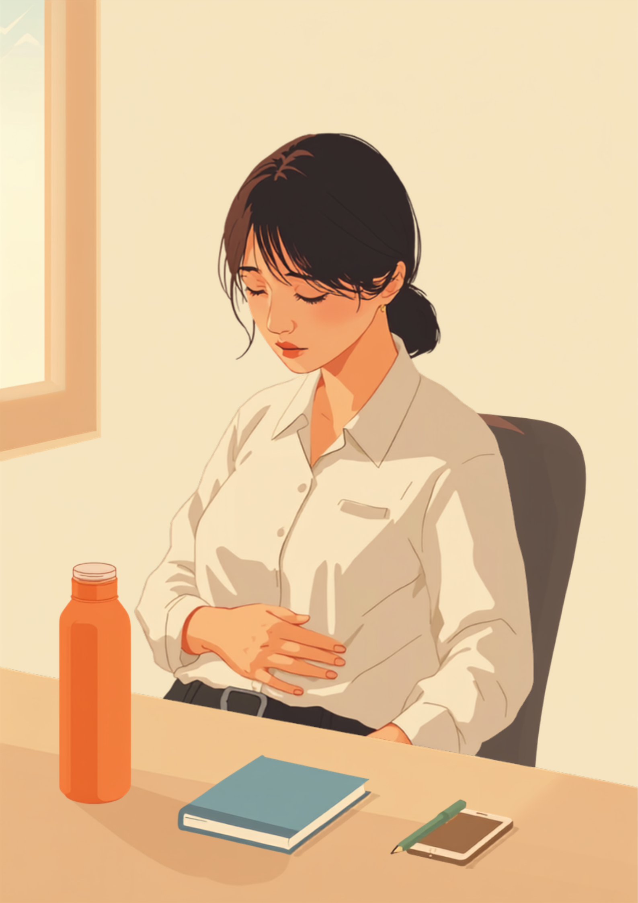
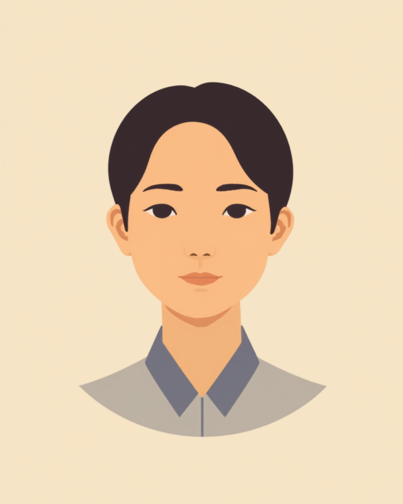

潰瘍性大腸炎やクローン病は、症状が落ち着いている時期と、突然悪化して入院が必要になる時期がある病気です。若いうちに発症することが多く、働き盛りの時期にこの病気と付き合いながら仕事を続けている方も少なくありません。「また休みますって、どう切り出せばいいんだろう」「薬の副作用で顔つきが変わったことに気づかれているかもしれない」。この記事では、炎症性腸疾患（IBD）のある方が仕事の中で抱えやすい気まずさと、職場への伝え方、使える制度を当事者の声をもとに整理しました（2026年7月時点の情報です）。
PR



デスクの下で、そっとお腹に手を当てる瞬間がある
「また休むのか」と思われそうで、入院の報告が怖くなる
潰瘍性大腸炎やクローン病は、症状が落ち着く「寛解期」と、悪化する「再燃期」を繰り返すことがある病気です。いつ再燃するかを本人も完全には予測できないため、急な欠勤や入院が起きやすいという特徴があります。ミミ
就労支援の現場で関わってきた中で、炎症性腸疾患のある方から何度も聞いてきた言葉があります。「また入院するの、って思われてる気がして、報告するたびに気が重くなる」というものです。潰瘍性大腸炎やクローン病は指定難病で、多くは10代から30代という若い時期に発症します。ちょうど就職して数年、仕事を覚え始めた時期に、急な入院や欠勤を繰り返すことになりやすいのだと思います。
本人にとっては、決してさぼっているわけではなく、体の中で炎症が起きているという事実があるだけです。それでも、同じ職場の人から見ると「またか」という印象を持たれるのではないかという不安が先に立ち、入院の報告そのものが一つのハードルになってしまうことがあるようです。
!
潰瘍性大腸炎・クローン病の症状の現れ方や再燃の頻度には個人差があります。この記事で挙げる内容がそのまま当てはまるとは限らないため、体調に不安がある場合は自己判断せず主治医に相談することをお勧めします。
「入社して3年目くらいから再燃の頻度が上がって、その年は結局2回入院しました。1回目のときは上司も『大変だったね、ゆっくり休んで』って言ってくれたんですけど、2回目のときはちょっと声のトーンが違ったんです。責めてるわけじゃないのは分かってるんですけど、こっちが勝手に『またかよって思われてる』って感じてしまって、退院した日、報告のメールを打つのに30分くらいかかりました。」
20代・女性（潰瘍性大腸炎・事務職）
相談の一コマ

相談者
また入院が必要になりそうで、上司に報告しないといけないんですが、正直言うのが怖いです。前回も休んだばかりなので。

ミミ
炎症性腸疾患は、本人の意思とは関係なく再燃してしまう病気です。怖いと感じるのは当然のことですが、それはさぼりとはまったく違うことなんですよ。
相談者
頭では分かってるんですけど、報告するたびに申し訳ない気持ちでいっぱいになってしまって。
ミミ
その気持ちを抱えたまま一人で伝え続けるのはしんどいですよね。次の章で、事前に整理しておくと伝えやすくなる視点を一緒に見ていきましょう。
薬の副作用で顔つきが変わることの、言えない気まずさ
潰瘍性大腸炎やクローン病の治療では、炎症を抑えるためにステロイドが使われることがあります。効果がある一方で、ムーンフェイスと呼ばれる、顔が丸くふくらんだように見える副作用が出ることがあるとされています。命に関わるものではないとされていますが、見た目の変化そのものが、本人にとってはとてもつらいものになる場合があります。
i
ムーンフェイスなどの外見の変化は、多くの場合ステロイドの減量とともに徐々に変化していくとされています。ただし個人差があり、変化の感じ方や程度は人によって異なります。見た目の変化がつらいときは、我慢せず主治医に相談してください。
見た目の変化について、職場で聞かれることは少ないかもしれません。ただ、聞かれないからこそ「気づかれているのに、誰も何も言わない」という空気そのものが、本人にとってはプレッシャーになることがあるようです。病気の症状ではなく薬の副作用であることは、意外と知られていない事実の一つだと思います。
「クローン病でステロイドを飲んでた時期、正直言うと顔がすごい丸くなって、自分でも鏡見るのがつらかったです。会議でオンラインカメラをオンにするのが本当に嫌で、体調のことより見た目のことばかり考えてました。誰も何も言ってこなかったんですけど、逆にそれが気まずくて、自分から『薬の副作用なんです』って先に言っちゃいました。言ってしまえば、意外と楽になったんですけど、言うまでの半年くらいはずっとモヤモヤしてましたね。」
30代・男性（クローン病・システムエンジニア）
職場にどう伝える、体調と伝え方のバランス
厄介なのは、伝え方によっては必要以上に心配されすぎるという問題も起きることです。ちょっとお腹を押さえただけで「大丈夫?また入院?」と聞かれ続けると、それはそれで気まずいという声もあります。「言わなすぎて誤解される」と「言いすぎて心配されすぎる」の間で、ちょうどいい伝え方を見つけるのは簡単ではありません。
確定診断がついたタイミングでの伝え方
信頼できる直属の上司や人事担当者には、確定診断がついた段階で早めに伝えておくという方法をとっている方もいるようです。「原因不明の炎症が体の中で起きる指定難病で、時々入院が必要になる」という簡潔な説明に加えて、自分でも体調管理に努めていることを伝えると、相手も受け止めやすくなる場合があります。
- 「感染症のリスクがあるので、満員電車のラッシュ時間はできれば避けたいです」
- 「通院日はあらかじめ共有するので、その日は業務量を調整してもらえると助かります」
- 「顔つきの変化は薬の副作用によるもので、体調が悪化しているわけではありません」
- 「声をかけてほしいのは動けなくなったときで、普段は気にしなくて大丈夫です」
症状や配慮してほしいことを、簡単な表やメモにまとめて渡すという工夫をしている方もいます。口頭だけより伝わりやすく、努力していることも一緒に伝わりやすくなるという声を聞きます。ミミ
入院で有給休暇を使い切ってしまった場合は、就業規則にある傷病休暇や特別休暇の制度を使えることがあります。産業医や人事担当者に、半年ほどの入院になった際に特別休暇扱いにしてもらえたという例もあるようです。一人で抱え込む前に、まず相談してみることをお勧めします。
使える制度と、一人で抱えないための相談先
指定難病としての医療費助成
潰瘍性大腸炎・クローン病は指定難病に含まれており、重症度などの基準を満たすと医療費助成の対象になる場合があります。また、人工肛門の造設などの状態によっては、身体障害者手帳（内部障害）の対象になることもあります。制度の詳細は自治体や主治医によって案内が異なるため、詳しくは自治体の難病相談窓口にご確認ください（2026年7月時点の情報です）。
相談できる窓口
- 主治医・消化器内科（症状の記録や、働き方についての意見書の相談）
- 職場に選任されている産業医（50人以上の事業場に選任義務あり）
- 自治体の難病相談・支援センター、障害福祉窓口
- 就労移行支援事業所（体調管理を含めた就労準備や職場との調整）
潰瘍性大腸炎・クローン病の症状の現れ方や、必要な配慮の内容には個人差があります。この記事の内容がそのまま当てはまるとは限らないため、実際の判断は主治医・支援者・自治体の窓口とよく相談しながら進めることをお勧めします（2026年7月時点の情報です）。
急な入院や欠勤は、本人が望んで起きているわけではありません。事前に整理して伝えておくことは、決して大袈裟なことではなく、お互いが安心して働くための準備だと思います。
よくある質問
Q. 潰瘍性大腸炎やクローン病でも障害者手帳は取れますか？
潰瘍性大腸炎・クローン病は指定難病であり、人工肛門の造設などの状態によっては身体障害者手帳（内部障害）の対象になる場合があります。ただし症状の程度や状態によって対象になるかどうかは異なるため、詳しくは主治医や自治体の障害福祉窓口にご確認ください（2026年7月時点の情報です）。
Q. 急な入院や欠勤を職場にどう伝えればいいですか？
症状の詳細まですべて説明する必要はないとされています。「原因不明の炎症が起きる病気で、時々入院が必要になること」「体調管理には努めていること」を簡潔に伝え、配慮してほしい点を具体的に絞って共有する方法が助けになる場合があります。
Q. ステロイドの副作用で見た目が変わるのがつらいときは？
ムーンフェイスなどの外見の変化はステロイドの副作用として知られており、多くの場合は減量とともに徐々に変化していくとされています。見た目の変化がつらいと感じるときは、一人で抱え込まず主治医に相談することをお勧めします。
Q. 入院で有給休暇がなくなった場合、どうすればいいですか？
就業規則によって傷病休暇や特別休暇の制度が用意されている場合があります。産業医や人事担当者に早めに相談し、利用できる制度がないか確認しておくと、いざというときに慌てずに済む場合があります。
Q. IBDがあっても転職や就職はできますか？
一概には言えませんが、テレワークやフレックス制度がある企業、通院や体調管理への理解がある職場を選ぶことで両立しやすくなるという声があります。就労移行支援機関などに相談しながら、自分に合う働き方を探す方法もあります。
この5点を頭に置いておくだけで、少し気持ちが軽くなるかもしれません
PR


一人で抱え込む前に、今の気持ちを話してみませんか
「まだ迷っている」段階でも大丈夫です。mimemimeの無料相談は、今の状況の整理から一緒に始められます。
無料で話してみる
おのざる
mimemime代表。就労支援の現場経験をもとに、障がいのある方の働く不安に寄り添う記事を執筆。